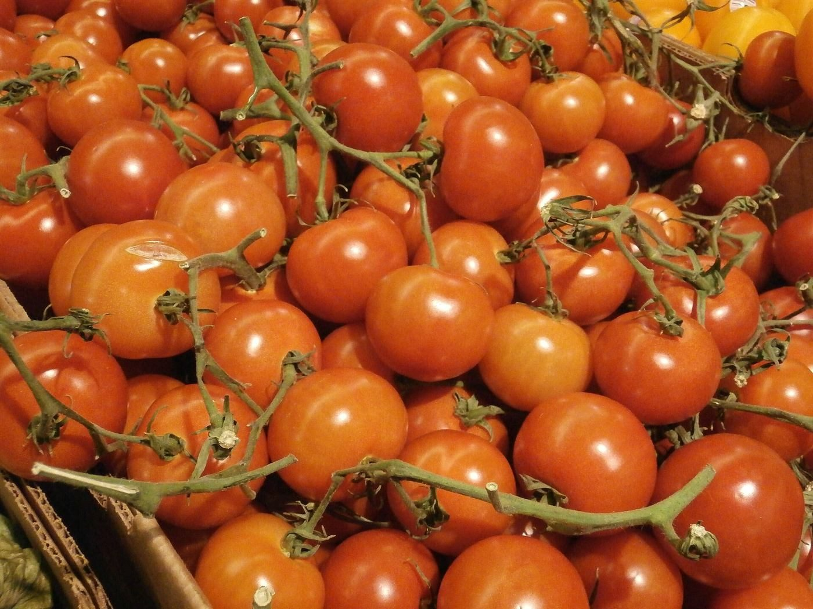
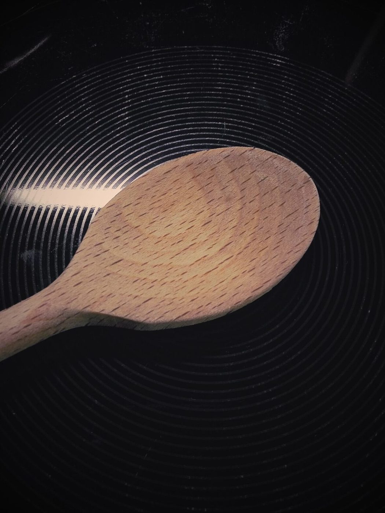
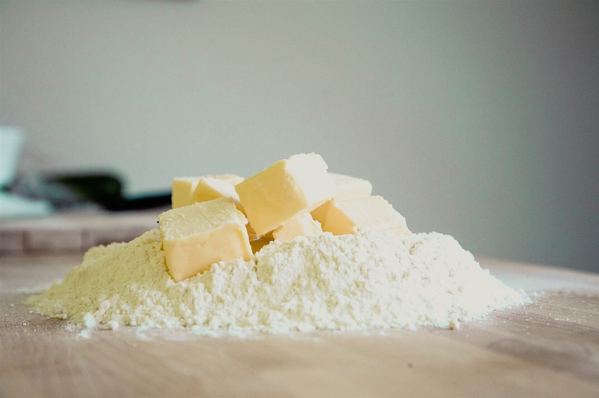
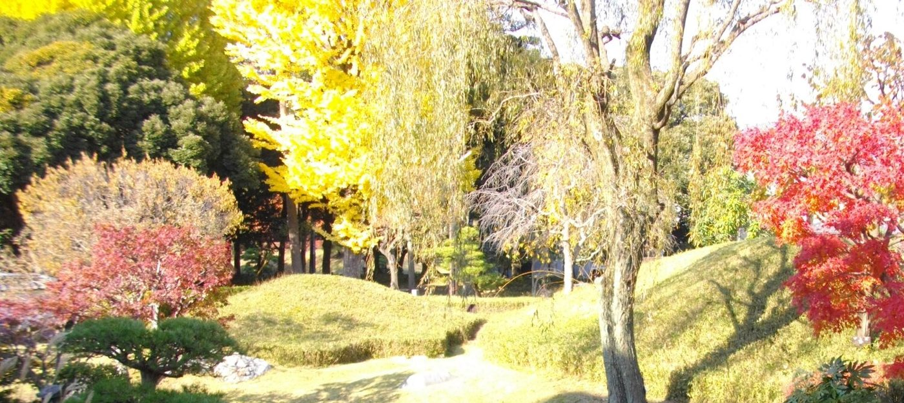

Bistro à Ashikaga
Bistro
IWASAKI足利市巴町の、ビストロ
栃木県足利市巴町にあるビストロです。お店のこと、メニュー、営業時間は、ただいま準備中。ご相談はお電話かInstagramからどうぞ。

Menu du jourページのご案内
コース仕立てにしてみました。お好きなところからどうぞ。
Ingrédientsビストロのイメージ
季節の素材を思わせる写真を並べました。料理の内容を示すものではなく、サイトの雰囲気をお伝えするためのイメージです。




Adresseご来店情報
- 住所
- 〒326-0805
栃木県足利市巴町2541-24 - 営業時間
- 準備中(店舗にご確認ください)
- 定休日
- 準備中(店舗にご確認ください)
営業時間やメニュー、料金はまだ確認できていないため、掲載していません。お出かけ前にお電話でご確認ください。